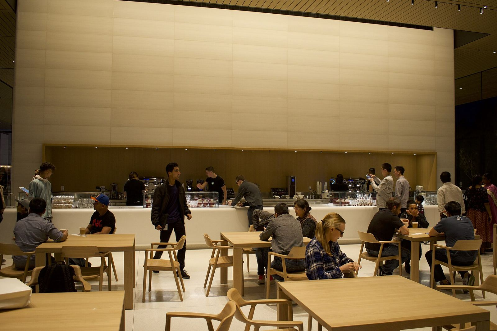

苹果宣布 Apple HomeView 自 11 月 13 日起在部分地区开售：配备 7 英寸 Liquid Retina 显示屏与 Siri AI；桌面款与壁挂款美国定价均为 299 美元，可在澳大利亚、加拿大、印度、新西兰、新加坡、英国和美国的 Apple Store 门店、官网与 App 订购；因 Siri AI 目前无法在欧盟的 iOS 上使用，该产品不在欧盟销售


苹果于 2026 年 11 月 13 日在新闻室发布更新稿，宣布 Apple HomeView 自当日起在部分地区开售，可在 Apple Store 门店、苹果官网商店及 Apple Store App 购买。新闻稿称，该设备配备 7 英寸 Liquid Retina 显示屏，并搭载 Siri AI；苹果将其写作“一个全新版本的 Siri，能力显著更强、也更善于对话”，并称 HomeView“被设计成家庭的中心，且对其中每一个人都是个人化的”。
新闻稿写道，HomeView 最多可按面部识别 6 个人，并据此在信息、FaceTime、日历、提醒事项和“查找”中展示其个人内容。Siri AI 具有屏幕感知，可依据用户屏幕上的内容回答问题或采取行动。当与支持 Apple Intelligence 的 iPhone 或 iPad 配对时，Siri AI 可以调用用户的个人上下文（例如日历、信息，以及各 App 中的相关信息），给出更个性化的回复，并可以跨 App 采取行动。新闻稿称，即使全家共用一台 HomeView，个人内容仍只对本人可见，仅在用户被面部识别、且其配对的 iPhone 或 iPad 在场并近期解锁时出现。脚注写明：Siri AI 在 HomeView 软件版本 27.2 中以测试版（beta）提供；设置与多用户支持需要运行最新软件的兼容 iPhone 或 iPad。
产品有桌面款与壁挂款。桌面款有银色、星光色、玫瑰粉与深空灰色；壁挂款有银色与深空灰色。两款美国定价均为 299 美元。可订购地区为澳大利亚、加拿大、印度、新西兰、新加坡、英国和美国。新闻稿写明：“因 Siri AI 目前无法在欧盟的 iOS 上使用，Apple HomeView 不在欧盟销售。苹果正在与欧盟建设性合作，试图寻找前进的路径。”壁挂款可选配 Schneider Home 的三种支架：Power Mount USB-C Wall Connector 起价 59.95 美元（美国），Power Mount AC Wired 起价 79.95 美元（美国），即日起可在苹果官网商店和 Apple Store App 订购；Power Mount PoE Wired 计划于 2027 年初上市，定价 129.95 美元（美国）。HomeView 上的 Siri AI 目前在美国、澳大利亚、加拿大、印度、新西兰、新加坡、南非和英国提供英语；加拿大法语支持将稍后通过免费软件更新提供。
因 Siri AI 目前无法在欧盟的 iOS 上使用，Apple HomeView 不在欧盟销售。苹果正在与欧盟建设性合作，试图寻找前进的路径。
摘记，不是官方媒体。销售地区、价格、功能说明与欧盟销售限制均出自苹果 11 月 13 日新闻室稿，包括稿中脚注关于 Siri AI 仍为测试版的说明。